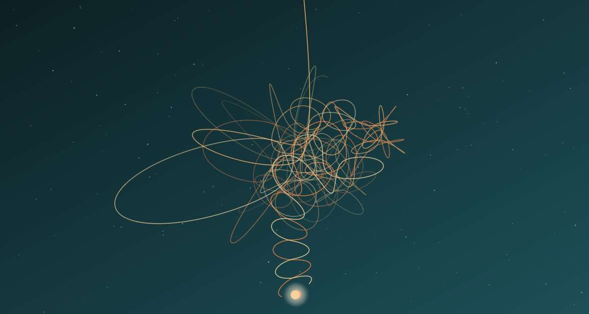

Задача трёх тел · глава 12 из 35
Красный берег. II

Кратко
Рассказ Е Вэньцзе. На базе её технические способности быстро становятся незаменимы, и её переводят в отдел мониторинга. Комиссар Лэй Чжичэн объясняет ей легенду: «Красный берег» — проект оружия, которое должно микроволновым излучением поражать вражеские спутники. Но Е замечает нестыковки: низкочастотные передачи, странное оборудование, слишком мощный передатчик для оружия ближнего действия. Наконец высшее командование признаёт, что легенда ложная, и Ян Вэйнин начинает объяснять ей настоящую задачу базы.
Главные моменты
- Е — «политически неблагонадёжная», но лучшая специалистка базы.
- Легенда о микроволновом оружии против спутников.
- Е по техническим мелочам догадывается, что ей лгут.
Значение
Шпионский роман внутри фантастического: Е Вэньцзе ведёт собственное расследование тайны «Красного берега», зеркально расследованию Ван Мяо сорок лет спустя.